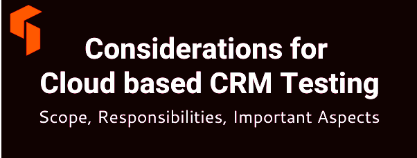

![Genislab]() Genislab Technologies
Genislab TechnologiesCloud based CRM platforms are on the crest of the wave. In 2008, 12% of companies were reported to use cloud based CRMs. A decade has passed, and now 87% of businesses use cloud based CRM platforms worldwide.
To be sure your cloud based CRM is stable and comprehensive, it has to be tested thoroughly. Cloud based CRM testing is quite different from the testing of on-premises software.
Table Of Contents
Scope of Cloud Based CRM testing: What in scope & what isn’t
Some activities implied by typical testing types aren’t fully applicable to cloud based CRM testing. Irrespective of the software development model, due to the SAAS (Software-as-a-Service) nature of such solutions, some testing activities are within the scope of the cloud CRM provider’s responsibilities.
It’s important to consider not only common CRM testing features, but also cloud related ones.
Functional testing
Functional testing remains a CRM tenant’s responsibility, as it validates that all CRM functions stated in a requirements specification are present in the current cloud based CRM, and that all configured and customized features function properly.
For example, the test team validates the smooth functioning of custom-created workflows and processes.
To make this testing type truly efficient, you should ensure that Business Analysts create maximum true-to-life user stories based on real tasks CRM users normally handle.
Example
- For sales employees: prospect tracking, lead scoring and assignment, opportunity scoring and nurturing, price books management, tasks management, automated communication with prospects, sales performance management.
- For marketing professionals: automated campaign and event tracking and management, marketing channels monitoring, email marketing.
- For customer service staff: case management, assignment and prioritization, automated case generation via social networks and IP telephony requests.
Compatibility testing
Cross-browser compatibility testing should be included into a cloud based CRM testing plan, as it allows checking whether CRM functionality and interface are rendered adequately across all required web browsers.
Users may be accustomed to different browsers and your CRM has to provide equally good user experience in any of them.
Backup and recovery testing
Outages, critical functional errors, faulty customizations can make you turn to CRM failover. Thus, you will require a backup CRM copy.
- Backup and recovery testing ensures that your disaster recovery strategy is functional.
- However, your cloud CRM provider responsible for regularly scheduled backups may restrict or limit access and the use of cloud CRM backups, which makes testing impossible or highly complicated.
- To resolve this issue, some companies decide not to rely solely on scheduled backups and request an additional on-demand backup from their CRM provider or third-party cloud-to-cloud backup providers.
- Though before implementing this strategy, which will allow you to frame and easily access your CRM backup and to perform backup testing, you should consider its cost.
Integration testing
Integration testing is important because your cloud based CRM may be full of internal integrations of out-of-the-box (OOTB) functionality with custom-developed and third-party apps, for example, offering advanced analytical tools with AI capabilities.
- Your cloud based CRM can be integrated with other enterprise software (for example, ERP, a financial system, a document management,a point of sale system) to form the landscape of your interconnected enterprise applications.
- A test team should check whether these different applications support consistent data formats, no data is duplicated or missed, API integration functions smoothly both in isolation and as a part of end-to-end transactions.
- Integration testing should validate that different CRM elements seamlessly comprise one vast CRM toolbox and varied external software integrations sustain smooth data sharing.
Performance testing
In case of performance testing, we check that the system doesn’t fail under increasing and continuous load, the number of CRM transactions per period and response time conform to requirements.
- A variety of factors may cause a CRM performance slow down.
- Your cloud based CRM performance is strongly dependent on internet connection.
- Test engineers should validate data communication requirements for you to know the minimum bandwidth needed for uninterrupted CRM performance.
- Other most common cloud based CRM performance issues that testing can uncover are too heavy customizations and the excessive number of configured CRM objects, fields and apps.
Usability testing
Even though its basic UI features are delivered OOTB, through usability testing, you should make sure that the configurations and customizations don’t result in twisted user experience.
- Usability testing checks whether your CRM solution offers optimal UX for all groups of users (sales, customer service, and marketing)
- Their complex workflows are clear and easy to perform
- The general CRM structure and navigation are logical and relevant data is quick to access
Regression testing
Regular updates performed by cloud CRM providers, your customizations and various add-ons require intermittent regression testing. Its purpose is to check that new features and system updates don’t damage the existing CRM functionality.
Security testing
With security issues being of significant importance for cloud based CRMs, their providers regularly perform the full scope of security testing activities, like vulnerability scanning and penetration testing.
- Established cloud CRM providers go far beyond security testing to ensure the top-notch security of their customer’s sensitive business information.
- For example, Microsoft Dynamics 365 team uses multiple backup ISO27001-certified data centers, encrypted data transmissions, two-factor user authentication, session timeouts, and more.
- Still, such security-related issue as the validation of role based access control remain within your cloud based CRM testing scope as it’s assigned on your side.
Cloud based CRM testing specifics to lookout for
Having outlined what precisely is to be tested, let us consider some points needed to jump start your cloud based CRM testing.
Test environment
Unlike testing of on-premises solutions, a test team can’t just start with installing several CRM copies. They need to choose and obtain relevant test environment.
- To meet this need, cloud CRM providers offer different non-production modes.
- For example, Microsoft Dynamics 365 is ready to provide test engineers with a free non-production instance, if your CRM subscription includes 25 User Subscription Licenses (USLs) or more. This number can be checked in your Microsoft Online Portal, or the instance can be just purchased.
- As to Salesforce, another leader in the CRM market, they come up with a much more complicated offer.
- A test team should choose from two different production mode copies (named sandboxes).
- However, only the Full Sandbox (the most expensive one) supports all relevant testing types while Partial Data Sandbox won’t do for performance and general user acceptance testing.
Test automation
Test automation suits cloud based CRM testing well. The automated execution of performance, regression, cross-browser and integration testing helps to save testing time and budget and ensure wide test coverage.
- The ROI of automated testing is higher during long-term projects allowing for automated scripts to be reused a couple of times.
- Complex CRM workflows normally make CRM testing projects long enough.
- However, cloud CRM providers come up with frequent software updates and the existing CRM functionality is often configured and customized.
- Test automation engineers need to regularly update test scripts to keep them relevant.
Test teams’ specific knowledge
Test leads should have relevant CRM domain and technical knowledge. Experience with cloud based CRMs and CRM testing is critical to understand possible risks bound to cloud CRM testing and, thus, develop an efficient test plan.
- As far as technical knowledge is concerned, test automation engineers should be experienced with relevant test automation tools.
- For example, Apache JMeter or Microsoft Visual Studio for performance testing and the Selenium WebDriver for regression, cross-browser, integration, and other types of testing.
- Besides, test engineers’ profound knowledge of general configuration and customization capabilities offered by CRM along with precise information on all the configurations and customizations introduced to your CRM are vital for their understanding of CRM functionality and potential pitfalls of the system’s operation.
On a final note
Testing cloud based CRMs differs from testing on-premises ones. Functional, cross-browser, integration, performance, usability, regression, and role based access control validation stay within your testing scope.
And such testing activities as vulnerability scanning, penetration, backup and recovery testing become the responsibility of your cloud CRM provider.
A knowledgeable test team can help overcome such cloud based CRM testing complications such as the poor choice of test environment and the lack of test automation.
Other popular articles:
- What are Test Pyramid and Testing Quadrants in Agile Testing Methodology?
- What are Build and Distribution Tools in Agile software testing?
- How to manage Regression Risk and evolve manual, automated test cases in Agile methodology?
- What is Testing and Configuration Management in Agile development?
- How to manage software testing tool lifecycle and tool metrics?
Leave a Reply